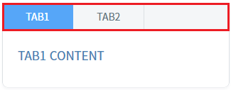
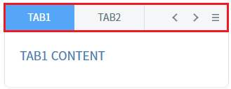
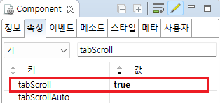

TabControl의 'tabScroll' 속성을 사용하여, 탭의 좌우 이동 버튼과 탭의 목록을 표시할 수 있는 버튼을 표시한 예제입니다.
일반적으로 탭의 수가 고정되어 있지 않거나 탭의 합산 너비가 TabControl의 최소 너비보다 큰 경우 'tabScroll'을 'true' 지정합니다.
탭의 합산 너비가 TabControl의 너비보다 큰 경우 UI가 틀어지는 현상이 있기 때문에 별도의 css 적용이 필요합니다.
(기본 동작) tabScroll 미사용
tabScroll 사용
각 영역의 TabControl의 탭 영역의 기능 버튼 유무를 비교합니다.
예제 영역 '(기본 동작) tabScroll 미사용'에서 테스트합니다.1
실행 결과를 확인합니다.
TabControl의 탭 영역을 확인합니다. 탭이 표시됩니다.
Image 1.브라우저(Chrome) 실행 예시

예제 영역 'tabScroll 사용'에서 테스트합니다.1
실행 결과를 확인합니다.
TabControl의 탭 영역에 버튼 '탭 이동'과 버튼 '탭 목록 보기'가 포함되어 있습니다.
Image 2.브라우저(Chrome) 실행 예시

1
TabControl의 속성을 정의합니다.
[필수] tabScroll="true"
탭 영역에 탭들의 이동과 선택의 편의성을 제공하는 기능 사용 설정
Image 3.웹스퀘어 스튜디오의 Component View - 속성 설정 예시

Example 1.Source
<!-- tabControl 소스 본문 예시 --> <w2:tabControl tabScroll="true" id="tac_exam2"> <!-- 중략 --> </w2:tabControl>
tabScroll